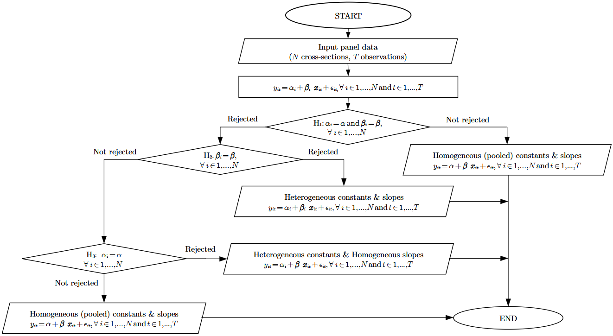

Hsiao Poolability test (1986;2022) in R
Hsiao Poolability test
The Hsiao poolability/homogeneity test (Hsiao 1986; 2022) for panel data is used to determine the homogeneity of coefficients across individuals in panel data. The test is composed of three consecutive hypotheses. The hypothesis that slope and intercept (constant) coefficients are the same across the panel is initially tested. If this hypothesis is not rejected, then the total homogeneity (pool) of both slopes and intercepts is concluded. If the first hypothesis is rejected, the second hypothesis tests the homogeneity of the slope coefficients. If this second hypothesis is rejected, different slope coefficients for all individuals are indicated, suggesting total heterogeneity. If this hypothesis is not rejected, then homogeneity of slope coefficients is implied. If this second hypothesis is not rejected, then the the third hypothesis tests the homogeneity of the intercept coefficients across individuals is performed. If this last hypothesis is not rejected, then total homogeneity is resulted. If this last hypothesis is rejected, equal slopes but different intercepts across individuals are indicated. The current implementation is derived from Hsiao (2022). This procedure is capitulated in Figure 1 and Table 1.

Fig. 1: Hsiao homogeneity hypothesis testing flow chart.
| Hypothesis | Null | Alternative |
| H1 | Pooled | H2 |
| H2 | H3 | Heterogeneous intercepts & slopes |
| H3 | Pooled | Heterogeneous intercepts & Homogeneous slopes |
Table 1: Hsiao homogeneity hypothesis testing table.
Example
For this example, the data Gasoline from plm R
package will be used.
# Import poobly and plm packages to workspace
library(poobly)
library(plm)
# Import "Gasoline" dataset
data("Gasoline", package = "plm")
# Print first 6 rows
head(Gasoline)## country year lgaspcar lincomep lrpmg lcarpcap
## 1 AUSTRIA 1960 4.173244 -6.474277 -0.3345476 -9.766840
## 2 AUSTRIA 1961 4.100989 -6.426006 -0.3513276 -9.608622
## 3 AUSTRIA 1962 4.073177 -6.407308 -0.3795177 -9.457257
## 4 AUSTRIA 1963 4.059509 -6.370679 -0.4142514 -9.343155
## 5 AUSTRIA 1964 4.037689 -6.322247 -0.4453354 -9.237739
## 6 AUSTRIA 1965 4.033983 -6.294668 -0.4970607 -9.123903A pdata.frame or a data.frame object is
expected as and a formula are required as minimum essential input for
the hsiao function. Note that data.frame
object input should be able to be transformed as
pdata.frame object and index input can be used
as well. For more about pdata.frame see at
plm::pdata.frame.
##
## Hsiao Homogeneity Test
##
## Hypothesis| Null | Alternative
## ----------+------+---------------------------------------------
## H1 |Pooled| H2
## H2 | H3 | Heterogeneous intercepts & slopes
## H3 |Pooled|Heterogeneous intercepts & Homogeneous slopes
## ===============================================================
##
## formula: lgaspcar ~ lincomep + lrpmg + lcarpcap
##
## Hypothesis F-statistic p-value
## 1 H1 129.3166 < 0.001
## 2 H2 27.3352 < 0.001
## 3 H3 83.9608 < 0.001According to this result, the coefficients of the given countries have both heterogeneous intercept & slope. In detail, the first hypothesis, \(H_1\), is rejected in 1% statistical significance level, indicating strong evidence against the \(H_1\). Then, the second hypothesis, \(H_2\), is tested and rejected as well in 1% statistical significance level. This is the end of the testing and so there is strong evidence that both intercept and slope are heterogeneous.
References
Hsiao, C. (1986)
Analysis of Panel Data. 1st edn. Cambridge: Cambridge
University Press (Econometric Society Monographs).
Hsiao, C. (2022) Analysis of Panel Data. 4th edn. Cambridge: Cambridge University Press (Econometric Society Monographs), pp. 43-49. doi:10.1017/9781009057745